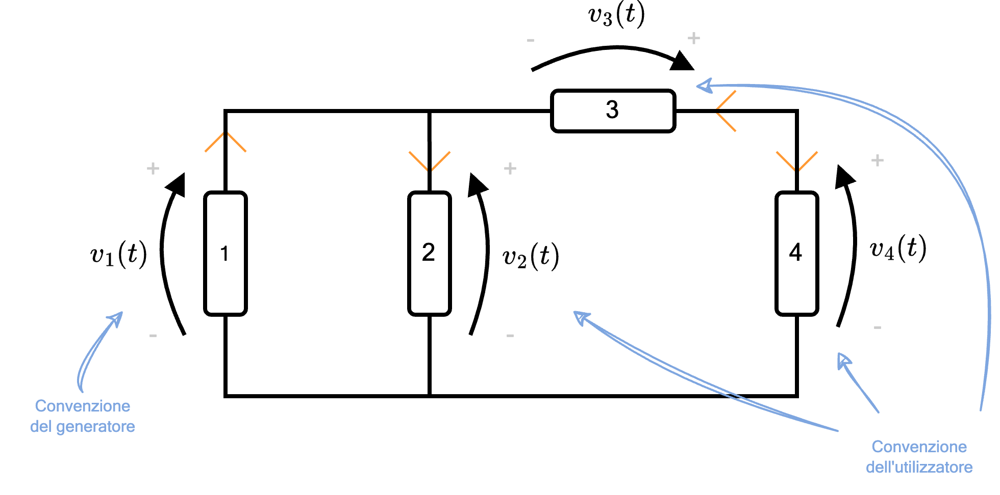

Definizione - Circuito elettrico
Un circuito elettrico è un insieme interconnesso di componenti elettrici (detti multipoli) e di loro collegamenti in un percorso chiuso in modo che la corrente elettrica possa fluire con continuità.
È possibile rappresentare un generico circuito come
È possibile rappresentare un generico circuito come
Definizione - Ipotesi di confinamento dei fenomeni
I fenomeni elettromagnetici risultano confinati all'interno del circuito, ovvero all'esterno non vi è propagazione delle onde, per cui \[ \frac{\partial \underline{B}}{\partial t} = 0 \qquad \text{e} \qquad \frac{\partial \underline{D}}{\partial t} = 0 \]
Nota bene - Non è sempre vero...
È da notare che se ciò è vero per il circuito, per alcuni componenti può non essere vero.
Definizione - Ipotesi di quasi stazionarietà
Considerando
Sotto questa ipotesi, è possibile considerare i circuiti a parametri concentrati, ovvero è possibile considerare le caratteristiche del conduttore come un unico elemento.
- \( L_c\) la lunghezza di un circuito;
- \( \lambda\) la lunghezza d'onda del segnale. Si definisce \( \lambda\) uguale a \[ \lambda = \frac{c}{f} \] dove
- \( c\) è la velocità di propagazione nel mezzo (consideriamo la velocità della luce nel vuoto, pari a \( 300 000 \frac{\mathrm{ \, km }}{\mathrm{ \, s }}\));
- \( f\) è la frequenza.
Sotto questa ipotesi, è possibile considerare i circuiti a parametri concentrati, ovvero è possibile considerare le caratteristiche del conduttore come un unico elemento.
Nota bene - Ad esempio
Consideriamo il caso della rete elettrica, dove si ha:
- una frequenza \( f\) pari a \( 50 \mathrm{ \, Hz }\);
- una lunghezza (ipotetica) del circuito \( L_c\) pari a \( 10 \mathrm{ \, m }\)
Definizione - Elementi circuitali
È possibile considerare un circuito più simile a quelli che saranno trattati, composti da bipoli (multipoli con solo 2 estremità):  In questo, identifichiamo:
In questo, identifichiamo:
- i rami, ovvero i componenti con i loro terminali;
- i nodi, ovvero dei punti di congiunzione di due o più rami.
- le maglie, ovvero un percorso chiuso formato dai rami.
Definizione - Potenza elettrica
La potenza elettrica \( p(t)\) (misurata in Watt \( \mathrm{ \, W }\)) è uguale a \[ p(t) = v(t) \cdot i(t) \] dove
- \( v(t)\) è la tensione, misurata in Volt \( \mathrm{ \, V }\);
- \( i(t)\) è l'intensità di corrente, misurata in Ampere \( \mathrm{ \, A }\).
Definizione - Energia
Considerando la potenza elettrica \( p(t)\), si ha che l'energia \( w(t)\) (misurata in Joule \( \mathrm{ \, J }\)) è uguale a \[ w(t) = \int_{t_1}^{t_2} p(\tau) \ d\tau \]
Definizione - Convenzione dell'utilizzatore e convenzione del generatore
Considerando la rappresentazione di un generico circuito, si ha che è "colui che legge" a stabilire il verso della corrente.
Per indicare la posizione del polo positivo o negativo, si utilizza una freccia indicante la tensione, nel seguente modo ovvero la testa della freccia indica il polo positivo, mentre la coda indica il polo negativo.
ovvero la testa della freccia indica il polo positivo, mentre la coda indica il polo negativo.
È infatti possibile adottare le seguenti convenzioni:
Per indicare la posizione del polo positivo o negativo, si utilizza una freccia indicante la tensione, nel seguente modo
È infatti possibile adottare le seguenti convenzioni:
- la convenzione dell'utilizzatore prevede che la corrente "entri" dal terminale positivo (ed "esca" dal negativo), ovvero In questo caso, se la potenza è positiva (\( p(t) \gt 0\)) si dice che il componente assorbe, altrimenti si dice che il componente genera;
- la convenzione del generatore prevede che la corrente "esca" dal terminale positivo (ed "entri" dal negativo), ovvero In questo caso, se la potenza è positiva (\( p(t) \gt 0\)) si dice che il componente genera, altrimenti si dice che il componente assorbe;

Definizione - Risoluzione di un circuito
Risolvere un circuito significa calcolare tensioni e correnti di tutti i rami del circuito. Per farlo si utilizzano:
- le leggi di Kirchhoff, ovvero equazioni topologiche (che dipendono solo da come sono collegati i componenti, e non dai componenti stessi);
- le equazioni costitutive, che descrivono i componenti.
Dimostrazione - Legge di Kirchhoff per le tensioni (LKT)
Data la proposizione
Enunciato:
Considerando una maglia, la sommatoria delle tensioni di tutti i componenti è nulla, ovvero \[ \sum_{i = 1}^{\# \text{componenti}} v_i(t) = 0 \qquad \forall t \]
Dimostrazione:
Considerando la premessa che \[ \underset{l}{\oint} \underline{E} \ d\underline{l} = - \underset{S}{\iint} \frac{\partial \underline{B}}{\partial t} \bullet \hat{n} \ dS \] Dato che per ipotesi \[ \frac{\partial \underline{B}}{\partial t} = 0 \] si ha che \[ \underset{l}{\oint} \underline{E} \ d\underline{l} = 0 \] Considerando inoltre (da premessa) che \( \underline{E}\) è conservativo, si ha che su una linea chiusa  si ha che \[ \overbrace{\underset{l}{\oint} \underline{E} \ d\underline{l}}^{0} \overbrace{=}^{\text{È conservativo}} \overbrace{\int_A^B \underline{E} \ d\underline{l}}^{v_{AB}} + \overbrace{\int_B^C \underline{E} \ d\underline{l}}^{v_{BC}} + \overbrace{\int_C^A \underline{E} \ d\underline{l}}^{v_{AC}} \] e quindi \[ v_{AB} + v_{BC} + v_{AC} = 0 \] che dimostra la legge.
si ha che \[ \overbrace{\underset{l}{\oint} \underline{E} \ d\underline{l}}^{0} \overbrace{=}^{\text{È conservativo}} \overbrace{\int_A^B \underline{E} \ d\underline{l}}^{v_{AB}} + \overbrace{\int_B^C \underline{E} \ d\underline{l}}^{v_{BC}} + \overbrace{\int_C^A \underline{E} \ d\underline{l}}^{v_{AC}} \] e quindi \[ v_{AB} + v_{BC} + v_{AC} = 0 \] che dimostra la legge.
Esempio - Calcolare le equazioni topologiche LKT
Considerando il seguente circuito
per determinare le equazioni delle tensioni, è necessario identificare le maglie presenti:
- consideriamo la maglia \( M_1\) determinando un verso di percorrenza (orario o antiorario). Per determinare l'equazione, assegniamo segno positivo alle tensioni di verso concorde (al verso scelto), mentre segno negativo alle tensioni con verso discorde. Otteniamo quindi l'equazione \[ M_1 \quad : \qquad v_1 - v_2 = 0 \]

- consideriamo la maglia \( M_2\) e otteniamo l'equazione \[ M_2 \quad : \qquad v_2 + v_3 - v_4 - v_5 = 0 \]

- consideriamo la maglia \( M_3\) (da notare che ignoriamo il componente \( v_2\), che non fa parte della maglia) e otteniamo l'equazione \[ M_3 \quad : \qquad v_1 + v_3 - v_4 - v_5 = 0 \]

Dimostrazione - Legge di Kirchhoff per le correnti (LKC)
Data la proposizione
Enunciato:
Considerando una superficie chiusa (ad esempio i nodi), la sommatoria delle correnti entranti è uguale alla sommatoria delle correnti uscenti, ovvero \[ \sum_{j = 1}^{\# \text{entranti}} i_j(t) = \sum_{k = 1}^{\# \text{uscenti}} i_k(t) \qquad \forall t \] o, in maniera equivalente \[ \sum_{j = 1}^{\# \text{correnti}} \pm i_j(t) = 0 \qquad \forall t \]
Dimostrazione:
Considerando la premessa che \[ \underset{S}{\iint} \left( \underline{J} + \frac{\partial \underline{D}}{\partial t} \right) \bullet \hat{n} \ dS = 0 \] Dato che per ipotesi abbiamo che se \( S\) non interseca alcun componente si ha \[ \frac{\partial \underline{D}}{\partial t} = 0 \] si ha che \[ \underset{S}{\iint} ( \underline{J} + \overbrace{\frac{\partial \underline{D}}{\partial t}}^{0} ) \ \bullet \ \hat{n} \ dS = 0 \] e quindi \[ \underset{S}{\iint} \underline{J} \bullet \hat{n} \ dS = 0 \] che dimostra la legge+.
Esempio - Calcolare le equazione topologiche LKC
Considerando il seguente circuito  determiniamo le correnti per determinare le equazioni delle correnti, è necessario identificare i nodi presenti:
determiniamo le correnti per determinare le equazioni delle correnti, è necessario identificare i nodi presenti:

- consideriamo il nodo \( A\) e assegnando segno positivo alle correnti "che entrano" e segno negativo a quelle "che escono", si ottiene l'equazione \[ A \quad : \qquad i_1 - i_2 + i_3 = 0 \]

- consideriamo il nodo \( B\) e otteniamo l'equazione \[ B \quad : \qquad -i_3 - i_4 = 0 \]
- consideriamo il nodo \( C\) e otteniamo l'equazione \[ C \quad : \qquad -i_1 + i_2 + i_4 = 0 \]